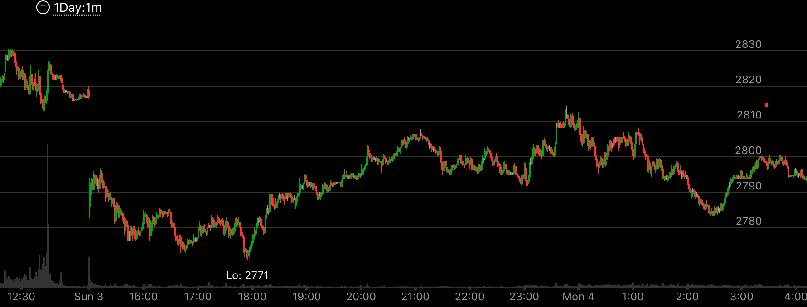

如何处理ES的gap
- 如果ES周日或者3点出现了gap，可以把它看作是快速的运动。这时可以综合考虑。如果大盘已经上涨或者下跌了很多，
然后大盘大幅高开或者低开，那么这个就是一个最后的加速。可以根据它加速的方式和后续的走势，来判断它是反转还是回调。
- 如果大盘走势刚刚反转，周日出现了大幅的gap，那么这个只是走势的开始，不能作为是一个快速运动的例子。

图示:
周日大幅低开，而在此前，周四和周五连续大跌。这样，这个大幅低开就是一个加速下跌的过程。它立刻反弹，然后缓慢走出新低，
然后开始回调。它回调的幅度很大，时间很长。持续了一周。


图示:
图一：周日开盘后，出现了大幅上涨，它出现了上影线。这个影线可以想象它从很高的位置下来，不能局限于它本身的样子。这样，它相当于，冲高后，立刻下来。
这样的走势未来一定上涨。它在中间17：00出现了很小的新高，然后缓慢拉回，似乎是一个相对强势，但是考虑到，上影线不能直接用这个点，而且它只是很小的高点。
而且它又走出了一个下跌走势，在20：00停留很久。
图二：开盘后，不断上涨，轻松越过了高点，一天都在上涨。


图示:
图一：盘中大跌，出现了然后大幅反弹。
图二：3点期货开盘后，大幅低开。出现了下影线。这个下影线虽然没有在最低点3092.但是可以想象它从那里开始。这样它就成了一个相对走势。这个走势到了高点后，
走平不到前面的高点。返回原位。成了相对弱势。未来一定会涨。